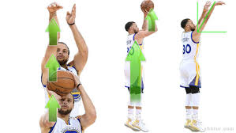
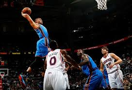

Other pages:
Intro to Basketball Dribbling Shooting A Ball Getting Boards Passing the BallShooting a basketball is a fundamental skill that is hard to perfect. Even proffesionals have a hard time shooting perfectly. Except for Steph Curry, who is regarded by some as the greatest shooter of all time. Curry has dedicated his career to being able to shoot the ball efficiently at all times.
Steph Curry was the best shooter in 2016  Steph Curry shooting formA jumpshot is what most consider to be shooting. You can shoot a 2 point jumpshot or a three point jumpshot.
A layup or dunk can also be considered a shot as well. A layup is when a player is close to the basket and scored. On the other hand, a dunk is when a player agressively puts the ball in the basket while their hands touch the rim. As of now, Russell Westbrook is known as one of the more explosive dunkers in the NBA. Although he is not such a great shooter like Steph Curry, he is one of the most athletic players, allowing him to be able to dunk all the time.
Russ with a ferocious dunk on Thon Maker 